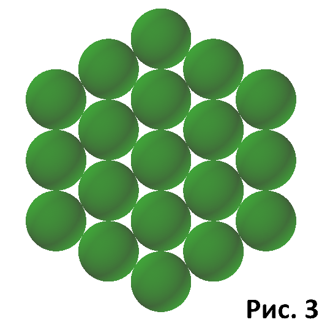
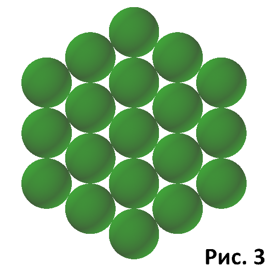

|
Речь пойдёт о физическом пространстве
, в котором существует Вселенная и живём мы. Хотя в жизни мы видим вокруг себя множество материальных объектов,
всё это далеко не так. Большую часть пространства внутри атома занимает пустота, частицы не составят и 1% общего объёма. Космические просторы по сравнению с заполняющими их материальными объектами ещё более огромны. Из этого напрашивается вывод, наш Мир почти полностью состоит из пустого пространства (вакуума), с относительно небольшим объёмом элементарных частиц. Казалось бы, что же здесь знать - нет ничего, да и только. Но ведь проходят же сквозь него волны, действуют разного рода силы, значит - есть какие-то свойства. А раз есть свойства, значит это - некая среда. И для этой среды не приемлимо понятие пустота. Мы видим вакуум пустым только потому, что в нём беспрепятственно распостраняется свет, то есть электромагнитные волны. Но мы понимаем, что в реальности это довольно плотная среда. Предположим, что это - просто геометрическая среда, состоящая из плотно прилегающих друг к другу бесконечно малых точек. Мне думается, что точку можно представить в форме шара, бесконечно малый шар не имеет измерений, ведь его радиус ноль. Поэтому, для того, чтобы уместить максимальное количество точек в объём, они должны лежать в определённом порядке. Допустим, как на рисунке 1, есть ряды линий, состоящие из бесконечно малых точек. И каждая точка следующего слоя ложится по углублениям предыдущего. В итоге получается смешанная структура из квадратов и треугольников, в объёме представляющая собой пирамидку. И пространство преимущественно состоит из таких структур. Это, конечно, не более, чем предположение, тем более что аргументов в его пользу практически нет, но всё же - конечные результаты поразительно сходятся на реальности, вплоть до мелочей. Но такое устройство пространства наводит на мысль, что именно оно определяет количество измерений. На одной линии положение точки определяется одним значением. На плоскости это уже два значения, то есть место пересечения двух линий, двух ординат. Но это в случае, когда плоскость состоит из взаимно перпендикулярных ординат. В нашем же случае часть плоскостей состоит из треугольных стрктур, а остальные стандартные, двухмерные плоскости. Не берусь судить, как определить, сколько измерений будет иметь такое смешанное пространство, но явно гораздо больше трёх. Ведь для определения места положения точки здесь не достаточно трёх координат. Видимо трёхгранные плоскости будут иметь три измерения, а двухгранные, как в рельном мире - два. Положение точки в пространстве определяется пересечением на ней ординат, линий системы координат. А если точки пространства уложены треугольной структурой, то для определения положения точки только на плоскости мы получаем уже пересечение на точке уже трёх прямых. Это только на плоскости, а если посмотреть на анимацию рис. 2, то увидим, что только по её сторонам уже имеется семь пар плоскостей. Пары параллельны, по этому считаем, что в таком пространстве возможно построить не менее семи различающихся плоскостей, три из которых будут иметь по две ординаты, и ещё четыре по три. Ординаты разных плоскостей могут совпадать по направленности, по этому не могу сказать, сколько измерений имеет такое пространство. Но явно более трёх. По этому будем считать его исходным, в дальнейшем увидим, как оно станет трёхмерным. Повторимся, пространство (вакуум, эфир, или называйте как угодно) - это область, или объём, занимаемый геометрической средой из точек, в которой происходят процессы, формирующие нашу Вселенную вместе с составляющими её объектами. Но, на первый взгляд, в такой среде процессы не возможны. Ни одну из точек невозможно сдвинуть с места, потому что всё вокруг занято. Остаётся один вариант - перемещать точки по кругу, образуя кольцо. Так, чтобы освободившееся место после сдвинутой сразу заполнялось соседней. Это уже массовое движение, масса точек, объединившись в линию и образовав круг, вращаются по нему. Его можно воспринимать как волну. Но треугольная структура суммируется в шестиугольники, причём правильные. А правильный шестиугольник по форме очень близок к кругу. По этому любая попытка движения - это просто перемещение по периметру шестиугольника, который центробежными силами "раздувается" в круг (рис. 3). Так образуется круговое движение с колебательным процессом внутри (Рис. 3). Точки просто вращаются по этой окружности. Это при взгляде с торца будет выглядеть колебанием, потому что присутствует две составляющие, движение вперёд и назад. А колебание по кругу, видимое на прямой линии - это синусоидальная зависимость. Рис. 4. Вот отсюда и берётся начало представлений о синусоидальности всех волновых процессов. Только таким образом возможно существование каких-либо процессов в пространстве. Теперь обратимся к размерности пространства. Понятно, что трёхмерность нашего мира подтверждается тем, что для определения местоположения объекта достаточно трех координат. Но необходима ещё привязка всей системы отсчёта к местности. О времени пока не говорим. Но было бы странным применять такую систему в описанном выше пространстве. Ведь все его связи построены на треугольниках. Уместнее было бы, если бы пространство было построено, как четырёхгранная, кубическая структура. Ведь она, по сути, повторяла бы Евклидову систему координат. Но следом ещё один подводный камень. Такое устройство жёстко привязано к пространству в плане ориентации. А мы в реальности можем по своему усмотрению устанавливать направления. Длина, ширина и высота могут произвольно изменять в пространстве свои направления, по нашему усмотрению, важен лишь угол между ними. Поэтому сразу оговорим, что описанное выше пространство будем считать исходным. Средой, на основе которой будет строиться реальное пространство нашего Мира. Далее, что же со временем. Оно ведь не может быть атрибутом пространства, оно - атрибут процесса, или действия. Да, время - измерение, мы его измеряем, но мы измеряем ещё много чего. А время следует измерять как атрибут процесса, и только. Ну а процессом в пространстве может быть только движение, других вариантов просто нет. Но это прелюдия к следующей главе, там появится наше трёхмерное пространство, и время как атрибут процесса. То есть появится пространство-время. Пространство со встроенной функцией процесса. А значит и со временем. |

 

{kind=link}

| Назад. Оглавление |
Следующая страница. Время |